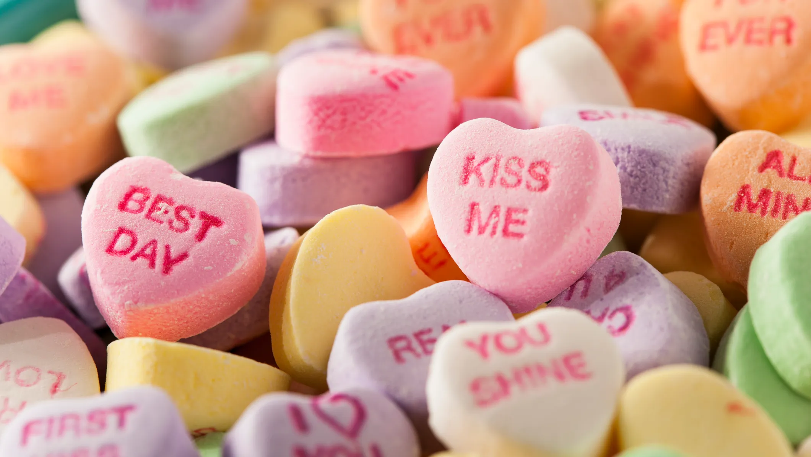

For this project, I was inspired by our (original) installation date: Valentine's Day 💖 As it was going to take place on Valentine's Day, I wanted to play with text and visual representations that symbolized this holiday that celebrates love. For mean, a classic symbolism for Valentine's Day is the heart candies.
For my code, I created a list of different words commonly found on these heart candies, like 'Kiss Me', 'I Love You' and "Miss You". Using the random seed function, my code would randomly generate these text one by one onto the bitmap header file of a heart emoji I uploaded with my code.